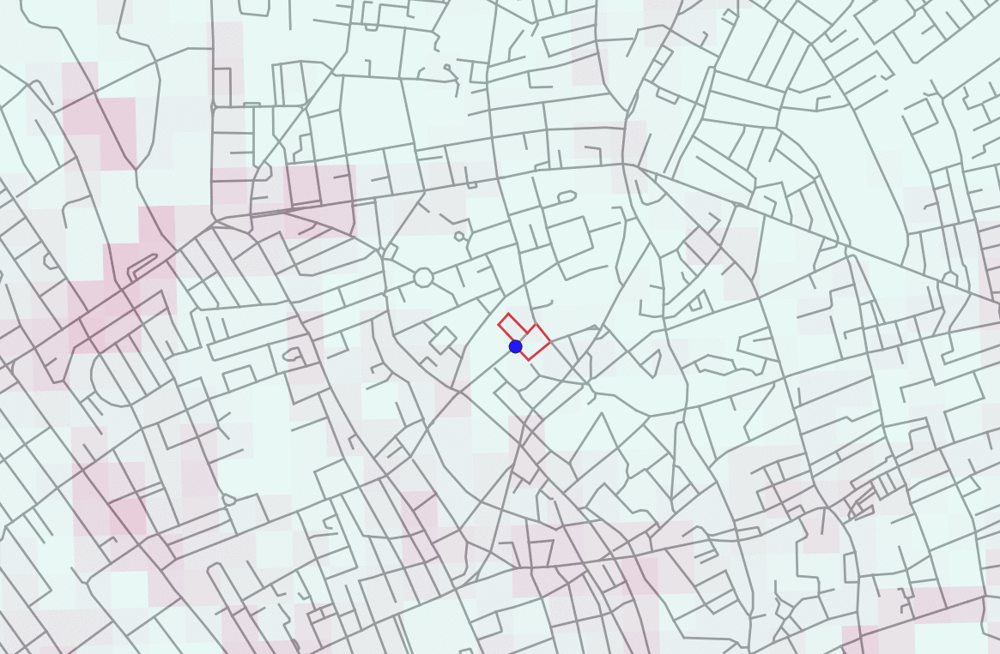

Patrick is a research assistant at the University of Warwick and a visiting researcher at the Alan Turing Institute. He is a member of the London air quality project at the Turing and a member of Warwick Machine Learning Group. During his BSc in Computer Science at Warwick, he was awarded a first class for his thesis titled 'Running from Air Pollution', which ultimately led to his current role as research assistant.
Patrick's research focuses on optimisation algorithms and heuristics for NP-hard graph problems. Specific areas of interest include Other interests include reinforcement learning,
This project aims to reduce the amount of air pollution people living in London are exposed to when moving about the city. Specifically, Patrick is researching algorithms to find running routes which minimise the air pollution of a runner starting and ending at the same point. This problem is NP-hard, which means finding the optimal solution is infeasible for large inputs. Therefore, research concentrates on approximating solutions using heuristics.

One future direction of research is minimising air pollution whilst considering the uncertainty in air quality predictions. Air quality is predicted by a probabilistic machine learning model developed by the team at in the London air quality project and uses data from air quality sensors, weather and traffic.
My research focuses on graph combinatorics and optimisation algorithms for NP-hard problems with applications to probabilistic machine learning models. I am part of the London Air Quality project which aims to develop machine learning algorithms to understand and predict air quality in London. My role in the project is to research algorithms which find running routes minimising the pollution exposure of a person following the trajectory. In addition to my primary research focus, I also have an interest in machine learning, databases and computational complexity theory.
My hobbies include triathlon, eating good food in large quantities, football (goalkeeper) and the occasional game of chess. Over the summer of 2018, I cycled around Europe through Germany, Austria, Slovenia, Italy and France, eating a large variety of pastries as I went.